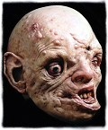
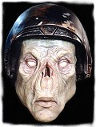
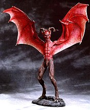

Spectral Motion
reveals
Boris The Werewolf!
This kit was the gremlins "kit pick of the show" at the last Mad Model Party!
Spectral Motion
reveals
Boris The Werewolf!
This kit was the gremlins "kit pick of the show" at the last Mad Model Party!
Spectral Motion News Release
Spectral Motion to launch companion kit to Alex The Vampire. Werewolf bust to debut at Spring Wonderfest.
Alex The Vampire finds enthusiastic fan base and sales are escalating. On the heels of this successful product SMI plans to unveil their latest offering, a stunning werewolf bust, at the Spring 1997 Wonderfest show in Louisville, Kentucky.
Pasadena, California February 24, 1997: Spectral Motion Inc. is a very busy place these days. With orders for Alex The Vampire outperforming short term estimates the solid resin bust is a decided hit. The demand for Alex is increasing and the 500 limited castings will soon be gone. In the wake of this successful product for Spectral Motion, Mike and Mary Elizalde, are well into production for the second in a series of four busts. "We're producing a werewolf bust that will personify a sinister but highly intellectual creature" said Mike Elizalde, president and art director for the Pasadena based effects company. "We are trying to get away from the typical raging animal and we are focusing on the creature's ability to use it's human intellect. Another one of our goals with our series of busts is to break the mold, if you will, of the typical bust. We are incorporating a great deal of dynamic motion as well as unmistakable expression in the face" he concluded. And breaking the mold they are.
In addition to the series of busts and the continued success of Netherlord, SMI is tapping Hollywood's talent pool to produce a line spectacular collectible latex masks. "Special effects artist Jordu Schell has designed three masks (Nigel, Mortimer, Space Warrior) that we are currently producing. We are very excited about the response that we are receiving and are looking forward to the next creation that we will be debuting at Wonderfest" said Mary Elizalde, vice president and sales executive.
Soon to join the growing line of Spectral Motion products is a life size bust of a pensive Lon Chaney Sr., sculpted by effects artist Aaron Sims, longtime sculptor for Rick Baker's Cinovation Inc. Sims has captured Chaney in a moment of deep thought in this brilliant art piece. The piece is finished in faux bronze patina. It is a must have for any Lon Chaney fan and SMI is currently taking orders.
For more questions regarding any of Spectral Motion's awesome line of products contact Mary Elizalde at (818) 794-2827 or write Spectral Motion Inc. at P.O. Box 41381 Pasadena, CA. 91114.
Spectral Motion Inc. announces the first in a series of prepainted latex masks created by special effects artist Jordu Schell! Each high quality mask is designed for display or to be worn. They are sure to attract a lot of attention! The first three masks to be released are:
| Mortimer | Nigel | Space Warrior |
|  |  |
 Spectral Motion Inc.
announces the release of
Alex The Vampire!
From the makers of
Netherlord,
this horrifically detailed kit is limited to 500 castings.
It comes with a signed and numbered base and real horror hair.
Mike Elizalde sculpted this 1/4 scale solid resin bust.
Prepainted buildups by Tom Gilliland are also available.
Alex is screaming for you!
Spectral Motion Inc.
announces the release of
Alex The Vampire!
From the makers of
Netherlord,
this horrifically detailed kit is limited to 500 castings.
It comes with a signed and numbered base and real horror hair.
Mike Elizalde sculpted this 1/4 scale solid resin bust.
Prepainted buildups by Tom Gilliland are also available.
Alex is screaming for you!
 Meet "Alex The Vampire!" The preliminary design art, shown here, is for
Spectral Motion's
next kit which is slated for a Halloween release.
Alex will be a 1/4 scale solid resin bust (head, shoulders and chest).
The hair probably won't be sculpted, this can be added by the hobbyist to taste.
Given the quality of their amazing first release,
Netherlord, we are all in for a nice
Halloween treat!
Meet "Alex The Vampire!" The preliminary design art, shown here, is for
Spectral Motion's
next kit which is slated for a Halloween release.
Alex will be a 1/4 scale solid resin bust (head, shoulders and chest).
The hair probably won't be sculpted, this can be added by the hobbyist to taste.
Given the quality of their amazing first release,
Netherlord, we are all in for a nice
Halloween treat!
 Spectral Motion introduces its first solid resin model kit, Netherlord. This is a 1/6 scale solid resin model kit. Netherlord is an original fantasy character designed and sculpted by Winston M. Elizalde: a winged, hooved & horned demon with human anatomy. The kit is 20 inches tall from base to wing tips. Wing span is 19 inches. Included is a signed and numbered certificate of authenticity along with instructions. The base is also signed and numbered. Box art is by motion picture illustrator Carlos Huante (Batman Forever, Godzilla, Men in Black). Color reference of built up kit is included as painted by Gino Acevedo who's work is seen in Alien 3, Species and Independence Day. Tom Gilliland did the magnificent paint job pictured here.
Available from
Creature Features
in Burbank California.
Don't miss this one!
Netherlord retails for $139.00 plus $10.00 shipping and handling.

The Gremlins in the Garage webzine is a production of Firefly Design. If you have any questions or comments please get in touch.
Copyright © 1994-1997 Firefly Design.